A priest and a private investigator who share a complicated past reconnect to solve the
disappearance of a teenage girl, uncovering a sadistic cult with far-reaching influence.
Story by Jennifer Andrews, Jason Wright, & Sean Berube



Ezra King is a military veteran who, after a tragic mistake in Afghanistan, has turned to a quiet
life of service as a Catholic priest. When one of his teenage parishioners goes missing, he feels
compelled to help her and her family, leading him to reconnect with Logan Dubois, who served
alongside him. Logan was like a brother to Ezra, but his involvement in the mistake that caused Ezra
to leave the military leads to lingering resentments. Logan has since become a private investigator
and family man, although unlike Ezra, a quiet life does not appeal to him. What appears at first to
be a simple disappearance uncovers a sadistic cult with influence that reaches far beyond what Ezra
and Logan could have imagined.
THE
PREMISE